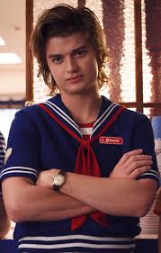

Steve Harrington is a fictional character from the Netflix television show Stranger Things, portrayed by Joe Keery. While starting out as a typical jock character, Steve has grown into a more paternal and caring character as the show has progressed, a development that has received widespread acclaim from critics and fans alike and has led to Steve becoming one of the show’s most beloved and enduring characters.[1] Initially a part of the recurring cast, Joe Keery was promoted to main cast in the second season. Steve is a side antagonist turned protagonist of season 1, and one of the main protagonists of season 2 and season 3.
